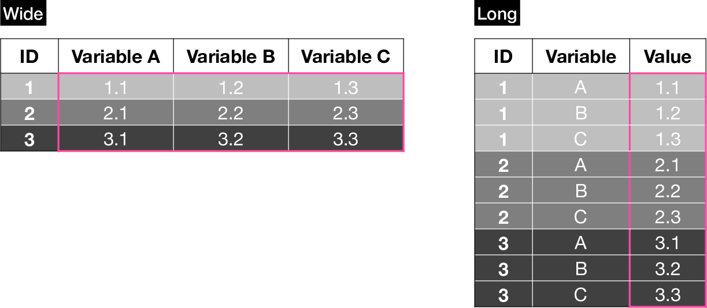
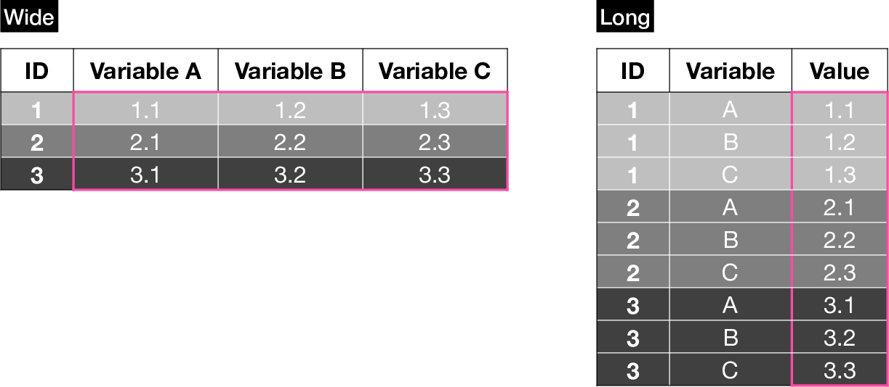

18 Reshaping

A wide dataset contains only a single row per case (e.g. patient), while a long dataset can contain multiple rows per case (e.g. for multiple timepoints). We want to be able to reshape from one form to the other because different programs (e.g. statistical models, visualization) may expect data in one of the other format for different applications (e.g. longitudinal modeling or grouped visualizations).
library(tidyr)
library(data.table)18.1 Wide to Long
Let’s create an example data frame:
dat_wide <- data.frame(ID = c(1, 2, 3),
mango = c(1.1, 2.1, 3.1),
banana = c(1.2, 2.2, 3.2),
tangerine = c(1.3, 2.3, 3.3),
Group = c("a", "b", "b"))
dat_wide ID mango banana tangerine Group
1 1 1.1 1.2 1.3 a
2 2 2.1 2.2 2.3 b
3 3 3.1 3.2 3.3 b18.1.1 base
The reshape() function is probably one of the more complicated builtin functions because its documentation is not entirely clear, especially if you’re not used to the jargon and specifically with regards to which arguments refer to the input vs. output data frame. Use the following figure as a guide to understand reshape()’s syntax. You can use it as a reference when building your own reshape() command by following steps 1 through 5:

dat_wide2long <- reshape(# Data in wide format
data = dat_wide,
# The column name that defines case ID
idvar = "ID",
# The columns whose values we want to keep
varying = list(2:4),
# The name of the new column which will contain all
# the values from the columns above
v.names = "Score",
# The values/names, of length = (N columns in "varying"),
#that will be recycled to indicate which column from the
#wide dataset each row corresponds to
times = c(colnames(dat_wide)[2:4]),
# The name of the new column created to hold the values
# defined by "times"
timevar = "Fruit",
direction = "long")
dat_wide2long ID Group Fruit Score
1.mango 1 a mango 1.1
2.mango 2 b mango 2.1
3.mango 3 b mango 3.1
1.banana 1 a banana 1.2
2.banana 2 b banana 2.2
3.banana 3 b banana 3.2
1.tangerine 1 a tangerine 1.3
2.tangerine 2 b tangerine 2.3
3.tangerine 3 b tangerine 3.3You can also define varying with a character vector:
varying = list(c("mango", "banana","tangerine")
Explore the resulting data frame’s attributes:
attributes(dat_wide2long)$row.names
[1] "1.mango" "2.mango" "3.mango" "1.banana" "2.banana"
[6] "3.banana" "1.tangerine" "2.tangerine" "3.tangerine"
$names
[1] "ID" "Group" "Fruit" "Score"
$class
[1] "data.frame"
$reshapeLong
$reshapeLong$varying
$reshapeLong$varying[[1]]
[1] "mango" "banana" "tangerine"
$reshapeLong$v.names
[1] "Score"
$reshapeLong$idvar
[1] "ID"
$reshapeLong$timevar
[1] "Fruit"These attributes are present if and only if a long data.frame was created from a wide data.frame as above. In this case, reshaping back to wide format is as easy as calling reshape() on the previously converted data.frame with no arguments:
dat_wideagain <- reshape(dat_wide2long)
dat_wideagain ID Group mango banana tangerine
1.mango 1 a 1.1 1.2 1.3
2.mango 2 b 2.1 2.2 2.3
3.mango 3 b 3.1 3.2 3.3Note that the reverse does not work, you need to specify the wide to long reshaping normally.
18.1.2 tidyr
dat_wide2long_tv <- pivot_longer(dat_wide,
cols = 2:4,
names_to = "Fruit",
values_to = "Score")
dat_wide2long_tv# A tibble: 9 × 4
ID Group Fruit Score
<dbl> <chr> <chr> <dbl>
1 1 a mango 1.1
2 1 a banana 1.2
3 1 a tangerine 1.3
4 2 b mango 2.1
5 2 b banana 2.2
6 2 b tangerine 2.3
7 3 b mango 3.1
8 3 b banana 3.2
9 3 b tangerine 3.318.1.3 data.table
dat_wide_dt <- as.data.table(dat_wide)
dat_wide2long_dt <- melt(dat_wide_dt,
id.vars = c(1, 5),
measure.vars = 2:4,
variable.name = "Fruit",
value.name = "Score")
setorder(dat_wide2long_dt, "ID")
dat_wide2long_dt ID Group Fruit Score
1: 1 a mango 1.1
2: 1 a banana 1.2
3: 1 a tangerine 1.3
4: 2 b mango 2.1
5: 2 b banana 2.2
6: 2 b tangerine 2.3
7: 3 b mango 3.1
8: 3 b banana 3.2
9: 3 b tangerine 3.318.2 Long to Wide
Let’s recreate the same long dataset:
dat_long <- data.frame(ID = c(1, 2, 3, 1, 2, 3, 1, 2, 3),
Fruit = c("mango", "mango", "mango",
"banana", "banana", "banana",
"tangerine", "tangerine", "tangerine"),
Score = c(1.1, 2.1, 3.1, 1.2, 2.2, 3.2, 1.3, 2.3, 3.3),
Group = c("a", "b", "b", "a", "b", "b", "a", "b", "b"))
dat_long ID Fruit Score Group
1 1 mango 1.1 a
2 2 mango 2.1 b
3 3 mango 3.1 b
4 1 banana 1.2 a
5 2 banana 2.2 b
6 3 banana 3.2 b
7 1 tangerine 1.3 a
8 2 tangerine 2.3 b
9 3 tangerine 3.3 b18.2.1 base
Using base reshape() for long-to-wide transformation is simpler than wide-to-long:

dat_long2wide <- reshape(dat_long,
idvar = "ID",
timevar = "Fruit",
v.names = "Score",
direction = "wide")
# Optionally rename columns
colnames(dat_long2wide) <- gsub("Score.", "", colnames(dat_long2wide))
dat_long2wide ID Group mango banana tangerine
1 1 a 1.1 1.2 1.3
2 2 b 2.1 2.2 2.3
3 3 b 3.1 3.2 3.318.2.2 tidyr
dat_long2wide_tv <- pivot_wider(dat_long,
id_cols = c("ID", "Group"),
names_from = "Fruit",
values_from = "Score")
dat_long2wide_tv# A tibble: 3 × 5
ID Group mango banana tangerine
<dbl> <chr> <dbl> <dbl> <dbl>
1 1 a 1.1 1.2 1.3
2 2 b 2.1 2.2 2.3
3 3 b 3.1 3.2 3.318.2.3 data.table
data.table’s long to wide procedure is defined with a convenient formula notation:
dat_long_dt <- as.data.table(dat_long)
dat_long2wide_dt <- dcast(dat_long_dt,
ID + Group ~ Fruit,
value.var = "Score")
dat_long2wide_dt ID Group banana mango tangerine
1: 1 a 1.2 1.1 1.3
2: 2 b 2.2 2.1 2.3
3: 3 b 3.2 3.1 3.3